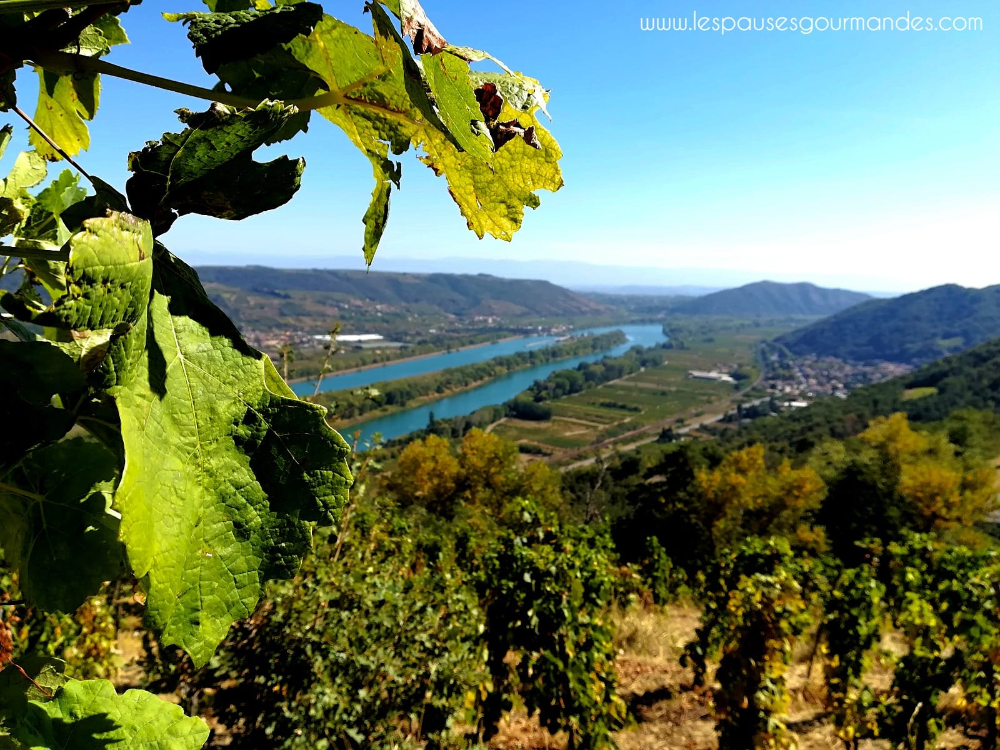
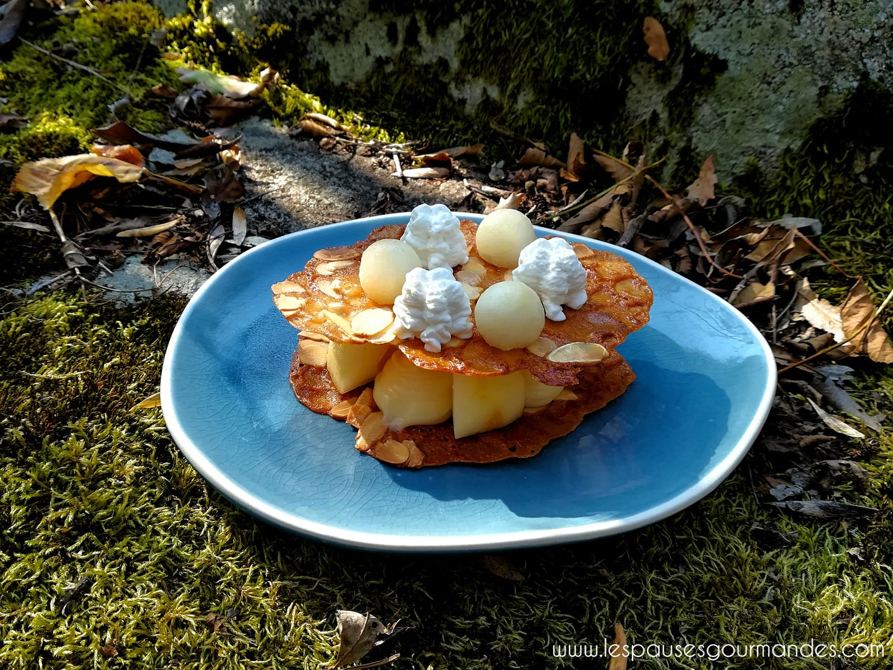
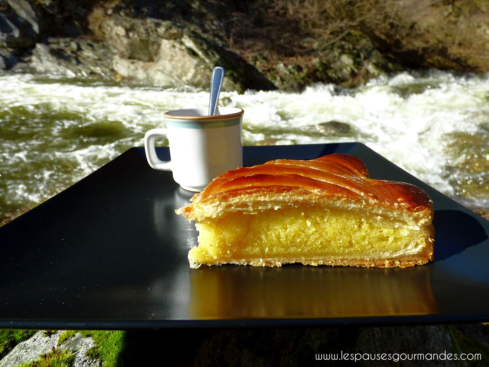
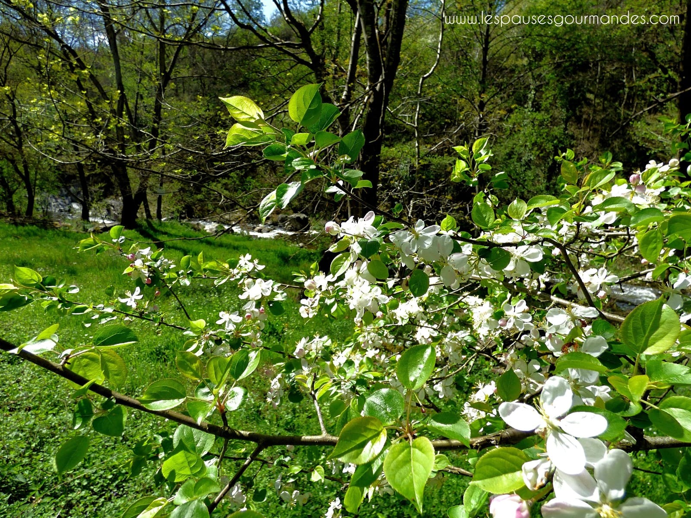
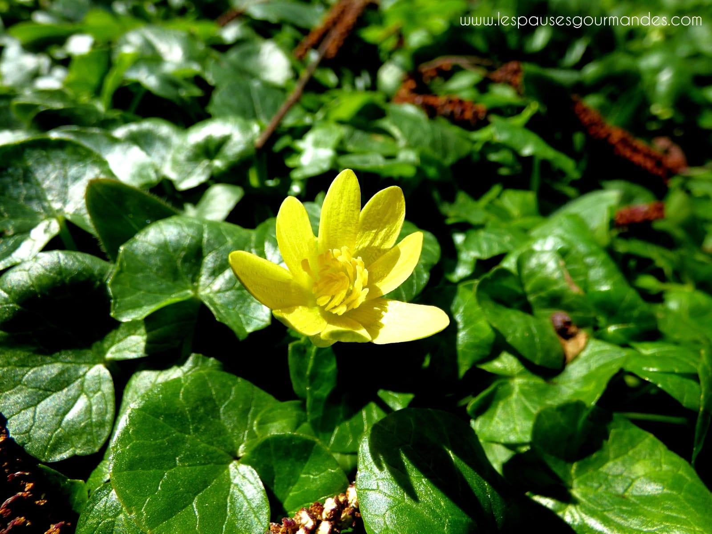
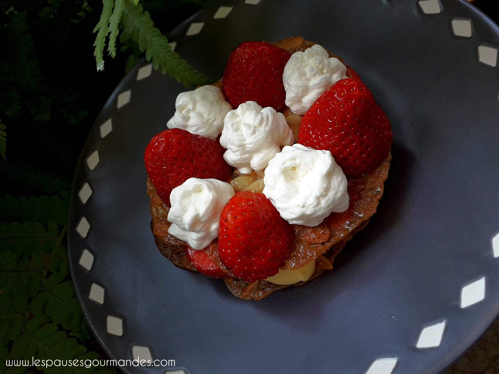
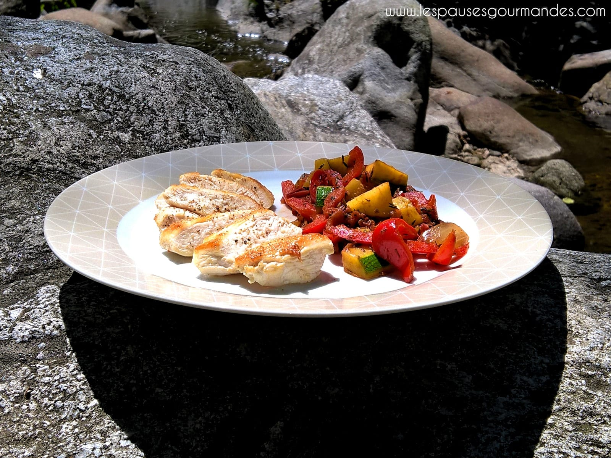
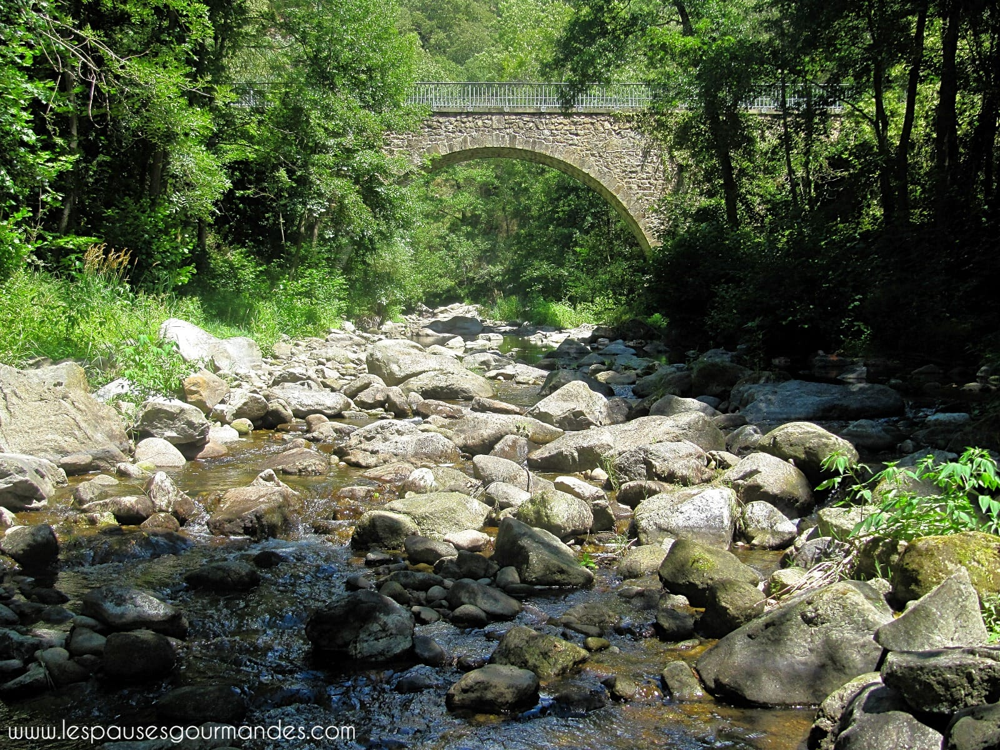

Accueil
Le Concept
Album
Le Chef
Tarifs
Réservations
Partenaires
Accueil
Le Concept
Album
Le Chef
Tarifs
Réservations
Partenaires
menu
Album
La Pause Gourmande d'Août
La Pause Gourmande de Septembre

La Pause Gourmande d'Octobre

La Pause Gourmande de Novembre
La Pause Gourmande de Décembre
La Pause Gourmande de Janvier


La Pause Gourmande de Février
La Pause Gourmande de Mars

La Pause Gourmande d'Avril
La Pause Gourmande de Mai

La Pause Gourmande de Juin
La Pause Gourmande de Juillet

